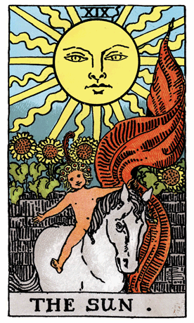

Continuing our journey through the Rider-Waite Tarot Deck, we encounter The Sun, a symbol of joy, vitality, and illumination. In this card, a radiant sun shines in a clear sky, and a joyful child rides a white horse. Sunflowers bloom in the background, and a brick wall, representing stability, stands behind the child.
The Sun in the Rider-Waite Tarot Deck is a powerful symbol of positivity, clarity, and the warmth of life-giving energy. The child on the horse represents innocence and the boundless, pure potential inherent in every individual. The sunflowers signify growth, success, and the bountiful harvest that comes from the nurturing rays of the sun.
The Sun card is a beacon of optimism and positivity. It suggests a time of celebration, joy, and the fulfillment of one's potential. The clear sky represents a state of mental clarity and the absence of obstacles on the path to success.
The Sun challenges individuals to embrace their inner child, find joy in the present moment, and allow their authentic selves to shine. It encourages a positive outlook on life and a recognition of the abundant blessings that surround them.
The horse symbolizes forward movement and progress, indicating that the journey toward success is both joyous and purposeful. The Sun card invites individuals to bask in the light of their achievements, acknowledging the positivity and vitality that comes from living in alignment with one's true self.
From a psychological perspective, The Sun represents the integration of the conscious and unconscious aspects of the psyche. It signifies a state of psychological well-being, self-assurance, and the alignment of one's inner light with external expression.
In a reversed position, The Sun may indicate a temporary clouding of clarity, a lack of joy, or challenges in recognizing one's potential. It could suggest a need for self-reflection, finding sources of positivity, and rediscovering the joy in everyday life. In such cases, the reversed Sun serves as a gentle reminder of the enduring light within, waiting to be reignited.
Archetypally, The Sun aligns with the archetype of the Hero or Heroine—a figure that overcomes challenges, finds joy in the journey, and emerges victorious. The Sun symbolizes the radiant energy that empowers individuals to achieve their highest potential.
Societally, The Sun encourages communities to celebrate successes, foster joy, and recognize the potential for growth and abundance that comes from a positive and collaborative mindset. It emphasizes the importance of collective well-being and the cultivation of a harmonious and joyful society.
In conclusion, The Sun in the Rider-Waite Tarot Deck invites us to embrace joy, vitality, and illumination. It encourages individuals to celebrate their achievements, cultivate a positive outlook, and recognize the boundless potential that comes from living authentically in the light of their true selves.